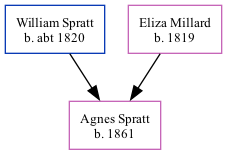

Agnes H Spratt 1861 -
[ Home ] | [ Calendar ] | [ Surnames Index ] | [ Family History ]A dressmaker and the child of William Spratt (a police man) and Eliza MillardAgnes Spratt, the first cousin three-times-removed on the father's side of Nigel Horne, was born in Marylebone, London, England in 18611.
Throughout her life, she lived at Little Chesterfield Street in Marylebone on Apr 7, 18611; and at New Chesterfield Street in Marylebone on Apr 2, 18712 and on Apr 3, 18813.
Parents
- William was born c. 1820
- Eliza was born in 1819
Citations
- 1861 England, Wales & Scotland Census - Findmypast (was age 0 and the daughter of the head of the household)
- 1871 England, Wales & Scotland Census - Findmypast (was age 10 and the daughter of the head of the household)
- 1881 England, Wales & Scotland Census - Findmypast (was age 20 and the daughter of the head of the household)
Family Tree
Generated by ged2site. Last updated on Nov 13, 2024